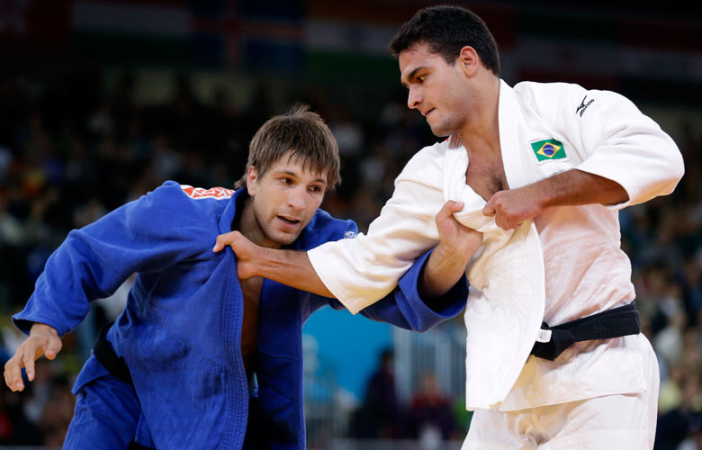

Relembre as dez maiores decepções brasileiras nas Olimpíadas 2012
Favoritos em suas modalidades, atletas favoritos do País caíram antes da hora nos Jogos de Londres
A Olimpíada de 2012, em Londres, ficará marcada na memória dos brasileiros. Foi na terra da rainha que os atletas do país conquistaram o maior número da história dos Jogos. Ao todo, foram 17 medalhas (três ouros, cinco pratas e nove bronzes), superando as campanhas de Atenas-2004 (15, com cinco ouros) e Atlanta-1996 (15, com três ouros). Essas conquistas são fruto do talento brasileiro, mas também do grande patrocínio de empresas públicas, o que realça as decepções em meio ao recorde tão festejado.
Por isso, Londres-2012 será lembrada também por expectativas que terminaram em enormes frustrações. De todos os medalhistas olímpicos brasileiros, apenas as confederações de futebol masculino e da vela não têm patrocínio público. A primeira decepção foi a derrota do atletismo brasileiro, esporte coberto pela estatal Caixa Econômica Federal. Em 20 anos, é a primeira vez sem uma medalha.
Fabiana Murer, a estrela maior do atletismo nacional, desistiu do seu último salto na fase de classificação e nem foi à final contra sua maior rival, a russa Yelena Isinbaeva (outra decepção). Maurren Maggi, medalhista de Pequim, ficou longe do que podia e esteve fora das finais também.
A natação brasileira, outra beneficiada pelo dinheiro estatal, também ficou aquém da expectativa dos torcedores. César Cielo, favorito ao ouro dos 50 metros livre, ficou apenas com o bronze. A boa surpresa dos atletas da água ficou por conta de Thiago Pereira , com a prata nos 400 m medley. Mas foi só na água.
Nem mesmo quem tem dinheiro - e muito - escapou ileso. A seleção brasileira de futebol, mais uma vez, amarelou na final e não voltou para casa com a medalha de ouro inédita.
A relação do investimento público/medalha olímpica se mostrou eficaz no judô, uma modalidade patrocinada também pela Infraero. Os atleta conseguiram quatro medalhas, uma de ouro com a jovem piauiense Sarah Menezes e com surpresas como o jovem Rafael Silva, bronze em Londres. Apesar disso, houve uma pequena decepção no judô, com o líder do ranking dos meio-médios, Leandro Guilheiro. O atleta, que perdeu na repescagem, não conseguiu chegar à luta por medalha.
Na ginástica, com injeção do dinheiro da CEF, Arthur Zanetti foi muito bem. Ele chegou ao ouro olímpico acabando com a hegemonia chinesa e dos países do leste europeu nas argolas.
Já o boxe, terceiro esporte com mais medalhas e com um forte patrocínio da Petrobrás, também está na lista de alegrias. Os irmãos Esquiva e Yamaguchi Falcão confirmaram a boa herança no boxe de seu pai, o Touro Moreno, e levaram uma prata e um bronze.
Ainda no ringue, Adriana Araújo conseguiu um terceiro lugar e se tornou a primeira mulher brasileira a subir ao pódio da categoria, que estreava nos Jogos.
Mas houve também o outro lado na lona. Everton Lopes, o primeiro campeão mundial do Brasil e que carregava a maior esperança da modalidade de voltar ao pódio olímpico pela primeira vez desde 1968 na Cidade do México, perdeu logo em seu primeiro combate em Londres, para o cubano Roniel Iglesias Sotolongo.
O vôlei, que conta com um enorme apoio privado, conseguiu bons resultados. Na praia, uma prata com Alison e Emanuel e um bronze com Juliana e Larissa. Já na quadra, masculino e feminino chegaram à final. Porém, só as mulheres, que surpreenderam na decisão contra as americanas, subiram ao lugar mais alto do pódio.
A grande surpresa, no último dia dos Jogos, apareceu de um esporte pouco conhecido no Brasil, o pentatlo moderno. A pernambucana Yane Marques, que conta com apoio do Exercito, conseguiu um suado bronze, mas que vale como ouro para que esportes menos conhecidos possam surpreender no Rio, em 2016.
Fonte site Gazeta do Povo
Newsletter
Quadro de Medalhas
 |
 |
 |
|
| EUA | 46 | 29 | 29 |
|---|---|---|---|
| China | 38 | 27 | 23 |
| Grã-Bretanha | 29 | 17 | 19 |
| Rússia | 24 | 26 | 32 |
| Coreia do Sul | 13 | 8 | 7 |
| Alemanha | 11 | 19 | 14 |
| França | 11 | 11 | 12 |
| Itália | 8 | 9 | 11 |
| Hungria | 8 | 4 | 5 |
| Austrália | 7 | 16 | 12 |
| Brasil | 3 | 5 | 9 |